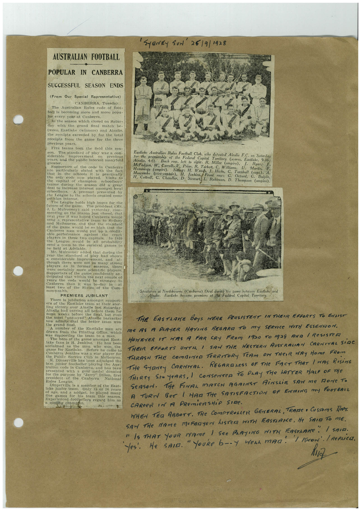

Book 1 · scan 026


Description
Transcription
Context
Review notes
Compare the machine draft with the scan. Handwriting and names need human review.
Artifacts
Edit the artifacts field in this note’s frontmatter to change these records. This summary is generated.
B01-S026-A01 — Newspaper clipping, Photo & Handwritten note — Book 1, scan 026
Types: Newspaper clipping, Photo, Handwritten note
Scope: Whole scanned page; individual items can be split out during review.
Caption: Not mapped yet.
Caption source: Not recorded yet.
Caption status: unmapped
Machine transcription
'SYRNEy SUN 26/9/1928 AUSTRALIAN FOOTBALL POPULAR IN CANBERRA SUCCESSFUL SEASON ENDS (From Our Special Representative) CANBERRA, Tuesday. The Australian Rules code of foot- ball is becoming more and more popu- lar every year at Canberra. In the season which closed on Satur- day with the grand final match be- tween Eastlake (winners) and Ainslie, the receipts exceeded by far the total receipts from the game for the three previous years. Five teams took the field this sea- SOTH The standard of play was a con- siderable previous vears, and the public interest manytold greater. Supporters of the code in Canberra are particularly elated with the fact that in the 3C10o1S WEIS T10o1 practically the code now played. Visits to capital of champion schoolboys oung the season dld a deal to increase in seast a did st eat schoolboys. presented by the League to the schools created com- petition interest. The League holds high hopes for the future of the game. The president (Mr. J. L.. Mulrooner) said vesterdav 12010- menting on the season just closed. that next year it was hoped Canberra would send a representave team to sydner and Melbourne, and that the standard of the game would be so high that the Canberra men would put up a credit- able performance against the players in these two capitals Care League would in all probability send a team to the carnival games to Mr. Mulrooney added that during the year me standard or play had shown considerable improvement. and al- though there were not so many strons blavers inter seasons there were certainly more scientific players. Supporters of the ticipated that within the next couple of years the code would be stronger Canberra than Was Co-day in at of the States of the Com- monwealth. PREMIERS JUBILANT There is jubilation amongst support- ers of the Eastlake team at their ster- ling victory Ainslie last Saturday. Ainsile nad carried all belore them tor some weeks before the final, but even the most "one-eyed" Aluslie barracker admits that the better team won the grand final. number of the Eastlake men are drawn from the Printing Office, which was supporting the team to a man. The hero of the game amongst East- lake fans is H. Jenkins. He has been acclaimed as the man won the game for Eastlake. Before he came to Canberra Jenkins was a star player for the Public Service Club in Melbourne. K. Dinnerville has been adjudged the best junior footballer playing the Aus tralian code in Canberra, and has been presented with a gold medal donated for the purpose by Jerry Dilion, first president of the Canberra National Rules League. Dinperville is a member of the East- lake junior team. Only 15 or 16 years of age, and a midget, he played many ine games for his team this season. Experienced footballers regard him as a coming champfon. Eastlake Australian Rules Football Club, who defeated Ainslie F.C. on Saturday for the premiership of the Federal Capital Terrilory (scores, Eastlake, 9-16, Ainslie, 4-6). Back row, left to right: R. Miller (umpire), McFadyen, W. Caroll, V. Prior, R. Torbett, C. William Ryan, Morcombe Sitting: H. Wood U. Martin, F 1. Hicks, C. (Vice-captain), H. Jenkins./ Front Turnbull (capt.), A. row: G. Orford, C Bulpin, H. Coltrell, G. Chandler, D. Stewart, L. Robinson, D. Thompsor (umpire). Spectators at Northbourne (Canberra) Oval during the game belween Eastlake arid "Ainstie. Eastlake became premiers of the Federal Capital Territory. THE EASTLAISE BOYS WERE PERSISTENT IN THEIR EFFORTS TO EAST Me AS A PARTER HAVING REGARA TO MY SERVICE WITH ESSENTION, HOWEVER IT HAS A FAR CRY FROM 1920 TO 1928 AND / ReSISTeR THEIR EFFORTS UNTIL I SAN THE HESTERN AUSTRALIAN CARNITAL SiDC THRASH THE COMBINeD TeRRITORY TEAM ON THeIR WAY Home FRom THe SyDney CARNIAL. REGARDLeSS OF THe FACT THAT I WAS RISinG THIRTY SIX YeARS, I CONSENTeD tO DLAY THe LATTER MALF OF THe SeAsoN. THe FINAL MATCH AGAINST AirShiE SAN me More To A TURN BUT / HAM THe SATISFACTION OF ENDING MY FOOTBALL CAREER IN A PREMieRSHie SIRe. WHEN TER ABBOTT. THE COMPTROMLER GENERAL, TRAMe • CUSTOmS TePT. SAM THE NAME MEFANYEr LISTER WITH FASTERICE, He SAID TO ME. " IS THAT YOUR NAMe I See PLAYING WITH FASTIANE" / SAID.